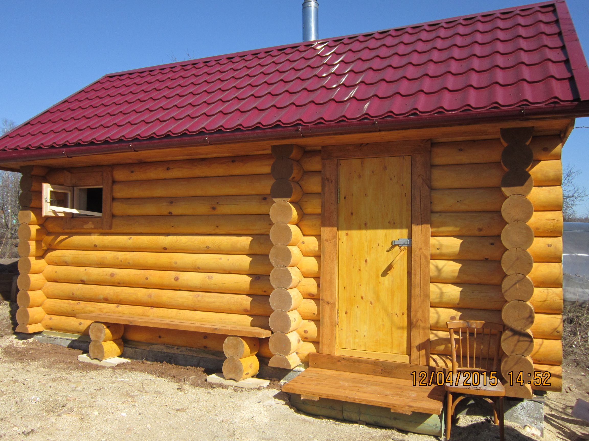

Строительная компания:
ООО «Аквастрой-НН»
Бани
Этапы строительства бани: от фундамента до внутренней отделки
Наличие собственного участка земли даёт прекрасную возможность обзавестись собственной баней или сауной. Для того чтобы монтаж такой постройки не вызывал проблем, рассмотрим в данной статье этапы строительства бани своими руками.
Ход монтажных работ
Первым делом необходимо выбрать место под будущее здание. Если участок у вас маленький, то это совсем просто: фундамент закладывать стоит там, где не будет возводиться жилой дом. При большем участке делайте выбор, основываясь на личном предпочтении. Однако
и соблюдения норм тоже нужно придерживаться.
При большем участке делайте выбор, основываясь на личном предпочтении. Однако и соблюдения норм тоже нужно придерживаться. Хоть свайная модель и выходит
несколько дешевле, рекомендуется прибегать к ней только в случаях, когда
Фундамент
Строительство бани поэтапно своими руками начинается с монтажа фундамента. Баня не является большим многоэтажным строением и не предполагает наличие внутри тяжёлой стационарной мебели. Следовательно, не имеет смысла заливать монолитную железобетонную плиту и можно обойтись свайным или ленточным основанием. Хоть свайная модель и выходит несколько дешевле, рекомендуется прибегать к ней только в случаях, когда местность под постройку наклонная или низинная. Лучшим выбором станет реализация ленточного фундамента, потому что он:
- Имеет более высокую прочность. Пригодится на тот случай, если вы в дальнейшем захотите пристроить мансарду.
- Создаёт дополнительную теплоизоляцию. Для парной это немаловажное преимущество.
- Предоставляет возможность организации подпола или погреба.
- Убираем растительный слой с выбранной под застройку площадки.
- При помощи колышков и шнура проводим разметку будущего фундамента.
- Копаем траншею по всему периметру и в местах, где будут проходить внутренние перегородки для бани. Глубина – 50 см, ширина – на 10 см больше предполагаемых стен.
- Засыпаем подушку из гравия толщиной 15 см и тщательно трамбуем её.
- Стелем слой гидроизоляции в виде полиэтиленовой плёнки.
- Монтируем по бокам рва опалубку из сбитых дощатых щитов, которая должна возвышаться на 20 см над уровнем промерзания почвы.
- Замешиваем раствор: гравий, песок и цемент в пропорциях 5:2,5:1. Воду добавляем по ситуации для лёгкости замешивания и предания массе текучести.
- Ждём 28 дней, после чего можно приступать к дальнейшим работам.
Совет: в целях экономии допускается под внутренними стенами закладывать фундамент вровень с ними.
Так как они всё равно не имеют несущей нагрузки.
Совет: рекомендуется в период застывания накрыть цементную поверхность плёнкой и постоянно смачивать. Это позволит стать бетону гораздо прочнее.
Сруб
Хоть цена дерева и выше многих современных строительных материалов для бани лучшего варианта не найти. Традиционную древесину с её теплом, запахом и эстетичным внешним видом невозможно полноценно заменить дешёвым шлакоблоком или пеноблоком. Для возведения корпуса сауны лучше всего подходит деревянный брус сечением 15 см на 15 см. Существует два способа сборки:
- В лапу.
- В чашу.
Совет: рекомендуется использовать древесину зимней рубки.
Потому что она даёт меньшую усадку после возведения постройки.
- Оптимальная высота для стен 250 см.
- Между венцами необходимо помещаются теплоизоляционные материалы.
- Древесина обрабатывается антисептиками для защиты от процессов гниения и от нападения вредителей.
Совет: для нижних венцов имеет смысл специально приобрести более прочные и надёжные породы деревьев, такие как дуб или лиственница.
Они смогут более успешно противостоять сырости исходящей от земли.
Пол
Далее поэтапное строительство бани из бруса переходит к монтажу пола:
- Для соблюдения гидроизоляции укладываем на бетон фундамента слой рубероида.
- Сверху устанавливаем деревянные балки.
- На балки стелем необрезную доску толщиной 15-20 мм, фиксируя гвоздями или саморезами. Так получается черновой слой пола.
- На черновое основание монтируем лаги.
- Между лагами укладываем утеплитель для бани.
В качестве чего замечательно подойдут:
- пенопласт;
- экструдированный пенополиуретан;
- базальтовая вата;
- керамзит.
- Утепляющий материал сверху обязательно покрываем гидроизоляционным слоем в виде полиэтиленовой плёнки толщиной три миллиметра.
- Финишный слой делаем из шпунтованной трёхсантиметровой доски.
Совет: при монтаже конструкции пола предусмотрите расстояние в пару сантиметров между утеплителем и чистовым покрытием для лучшей вентиляции воздуха.
Потолок
Теперь поэтапное строительство бани своими руками подходит к обустройству потолка, которое имеет свои особенности благодаря наличию наиболее агрессивной среды. Ведь особенно при эксплуатации в зимнее время снизу на потолок воздействует сильнейший жар, собравшийся со всей парилки, а сверху лютый мороз. Наиболее соответствует банным условиям подшивная конструкция, которая выполняется следующим образом:
- Устанавливаются потолочные балки бани. Как и в случае с каркасом можно использовать методы в лапу и в чашку.
- Сверху укладываем и закрепляем необрезную доску.
- С внутренней стороны, став на стремянку стелем полиэтиленовую плёнку для гидроизоляции с выпуском на боковые стены, закрывая балочные проёмы.
- Между балок монтируем листы утеплителя:
- минеральную вату;
- войлок;
- пеноизол;
- пенопласт;
- пенополиуретан.
- Далее закрываем всё алюминиевой фольгой для бани. Она служит для пароизоляции и отражения теплового излучения. Скрепляем её с плёнкой для обеспечения герметизации.
- Через фольгу к балкам прибиваем деревянные планки.
- На установленные рейки крепим шпунтованные доски.
При этом:
- Между потолочной вагонкой и стеной оставляем двухсантиметровые зазоры для обеспечения кондиционирования воздуха.
- Для фиксации используем кляймеры.
Крыша
Конструкцию крыши можно использовать двухскатную или односкатную. Односкатная конечно экономна, но и менее практична. Если вы хотите, чтобы ваша баня служила вам долго и надёжно рекомендуется устанавливать двухскатную систему. Тем более, что она также позволит оборудовать чердачное подсобное помещение. Состоит кровля из стропильной системы, обрешётки и изоляционного материала покрытия. Если у вас нет опыта соответствующих работ, то для осуществления этого этапа желательно пригласить специалиста.
Внутренние работыт
К этому моменту потолок и пол уже готовы, следовательно, этапы отделки бани теперь заключаются в обшивке стен:
- Набиваем на внутреннюю поверхность параллельные планки.
- Между них устанавливаем утепляющие материалы. Всё также остаются востребованными базальтовая вата, войлок, пенопласт и экструдированный полиуретан.
- Утеплитель закрываем фольгой для отражения теплового излучения.
- Обшиваем шпунтованной доской, используя кляймеры. Это избавит от выступающих шляпок саморезов, которые могут в дальнейшем служить причиной ожогов.
Заключение
Постройка бани своими руками – дело конечно хлопотное. Но результат того стоит. Выделить среди всех этапов строительства более важные не представляется возможным, все они, так или иначе, влияют на качество будущей бани. Помимо самих рекомендаций по строительству следует во время работ помнить некоторые особенности:
- Дерево, которое используется для возведения и отделки бани, уязвимо перед сыростью и поэтому его необходимо максимально защитить путём создания хорошей вентиляции и обработкой антисептиками.
- Парилка будет только тогда качественной и экономной по части потребляемого топлива, когда будет обеспечена максимальная теплоизоляция. Поэтому уделите особое внимание утеплению здания.
Наверх